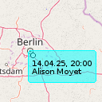
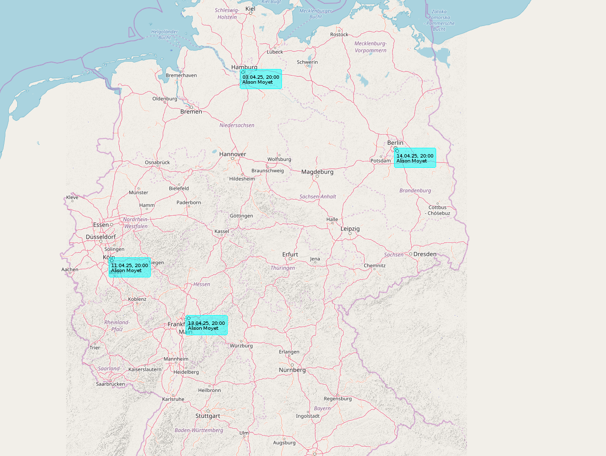

Eventim scrapen als AI-Ersatz

Ich habe neulich darüber berichtet, wie ich einen weiteren Dienst mit GIS-Bezug in meinen einquartierte. Damals beschrieb ich den Grund nur nebelhaft aös "eins meiner Wochenendprojekte" - nun ist es an der Zeit zu erklären, worum es sich dabei handelte...
Es soll ja immer noch Leute geben, die bereits Siris "Ich habe 5 Cafes gefunden, die Vanilla-Hazelnut-Chai-Mate anbieten, drei davon in Deiner unmittelbaren Nähe" für künstliche Intelligenz halten.
Ich habe neulich wieder einmal alte Projekte von mir angesehen und dabei realisierte ich, dass das Format iCal bereits Unterstützung für geo-codierte Locations anbietet. Dadurch wurde ich auf die Idee gebracht, iCals in EBMap4D darzustellen.
Das wiederum führte zu dem Gedanken, dafür nicht eine spezifische neue Paarung aus Layer und Painter erstellen zu müssen, sondern einfach die bestehenden zur Darstellung von GeoJSON zu nutzen.
Dafür müsste dann lediglich eine Konversion zwischen iCal und GeoJSON geschrieben werden und ich könnte alle iCal-Dateien einfach mit EBMap4D - und im Speziellen mit der Konfiguration für darzustellende Zeiträume - kombinieren.
Ein solcher Konverter ist im Projekt java-scratch auf GitLab zu finden - er macht aus dem Beispiel hier das folgende GeoJSON:
{
"features": [
{
"geometry": {
"coordinates": [
2.36885,
48.85299
],
"type": "Point"
},
"style": {
"stroke-opacity": "1.0",
"stroke-width": "2.0",
"fill-opacity": "0.25",
"stroke": "black"
},
"type": "Feature",
"properties": {
"summary": "SUMMARY:Eine Kurzinfo\r\n",
"uid": "UID:461092315540@example.com\r\n",
"organizer": "ORGANIZER;CN=\"Alice Balder, Example Inc.\":MAILTO:alice@example.com\r\n",
"name": "VEVENT",
"description": "DESCRIPTION:Beschreibung des Termins\r\n",
"location": "LOCATION:Irgendwo\r\n",
"time": {
"start": 1599775200000,
"end": 1600552740000
}
}
}
],
"metadata": {
"urlPropertyNames": [
"url"
],
"timestampPropertyName": "time",
"notSoImportantPropertyNames": [
"location",
"summary",
"organizer"
],
"importantPropertyNames": [
"description"
],
"showNamesOnSymbols": "True",
"idPropertyName": "uid"
},
"type": "FeatureCollection"
}
Als ich an diesem Punkt meiner Überlegungen angekommen war musste ich nur noch für ausreichend Testdaten sorgen - und da kommt jetzt der eingangs bereits erwähnte neue Dienst für (inverses) Geo-Coding ins Spiel:
Als ich nämlich realisierte, dass Eventim eine Webseite anbietet, die relativ einfach gescrapt werden kann, wusste ich, woher ich Testdaten gewinnen würde - das einzige Problem dabei war, dass die Adressen der Konzert-Locations in den Eventim-Daten stehen, aber nicht die Geokoordinaten. Und da kam dann Nominatim ins Spiel: Ich scrapete alle Daten von Eventim, las daraus die Location, fütterte diese in Nominatim und habe alle Informationen, um daraus eine GeoJSON-Datei zu generieren, die ich in EBMap4D einbinden und darstellen kann.
Der Code dafür ist im Projekt java-scratch auf GitLab zu finden.
Das Bild hier zeigt dies exemplarisch für die kommenden Konzerte von Allison Moyet

Die anstehenden Konzerte vonDamit kann ich also jetzt Fragen beantworten wie beispielsweise "Zeige mir auf der Karte die nächsten Konzerttermine von folgenden Bands ..." - und ich würde sehen, wann ich geographisch günstig gelegene Unterhaltung bekommen könnte...


Vor 5 Jahren hier im Blog
-
DIY EBook-Reader III
30.09.2019
Es ist schon längere Zeit vergangen, seit dem ich über Fortschritte dieses Projekts berichtet habe
Weiterlesen...
Tags
Android Basteln C und C++ Chaos Datenbanken Docker dWb+ ESP Wifi Garten Geo Git(lab|hub) Go GUI Gui Hardware Java Jupyter Komponenten Links Linux Markdown Markup Music Numerik PKI-X.509-CA Python QBrowser Rants Raspi Revisited Security Software-Test sQLshell TeleGrafana Verschiedenes Video Virtualisierung Windows Upcoming...
Neueste Artikel
- sQLshell endlich wieder per WebStart verfügbar!
Die sQLshell ist nunmehr wieder in drei Deploymentvarianten verfügbar: Dem Standardinstaller für Linux und Windows, der portablen Version zum Start von - zum Beispiel - einem USB-Stick und endlich wieder als WebStart-Variante
Weiterlesen... - Ubuntu Upgrade auf 24.04 - Lessons learned
Ich hatte letztens ein Issue bei Eye of Gnome eröffnet, wo mir während der Diskussion gesagt wurde, dass ich einfach eine viel zu alte Version einsetze - mit der aktuellen könne das nicht nachvollzogen werden. Das startete eine wilde Reise - Ich verwendete nämlich noch die letzte LTS-Release von Ubuntu (22.04) und führte zunächst ein Upgrade auf 24.04 aus - oder zumindest wollte ich das...
Weiterlesen... - Self-hosted Geo-Coding mit nominatim
Nachdem ich neulich eine Lösung zur Navigation in meinen Docker-Zoo holte, habe ich nunmehr nachgelegt: Für eins meiner Wochenendprojekte benötigte ich eine Möglichkeit, (inverses) Geo-Coding über eine API nutzen zu können - natürlich im besten Fall wieder self-hosted...
Weiterlesen...
Manche nennen es Blog, manche Web-Seite - ich schreibe hier hin und wieder über meine Erlebnisse, Rückschläge und Erleuchtungen bei meinen Hobbies.
Wer daran teilhaben und eventuell sogar davon profitieren möchte, muß damit leben, daß ich hin und wieder kleine Ausflüge in Bereiche mache, die nichts mit IT, Administration oder Softwareentwicklung zu tun haben.
Ich wünsche allen Lesern viel Spaß und hin und wieder einen kleinen AHA!-Effekt...
PS: Meine öffentlichen GitHub-Repositories findet man hier - meine öffentlichen GitLab-Repositories finden sich dagegen hier.